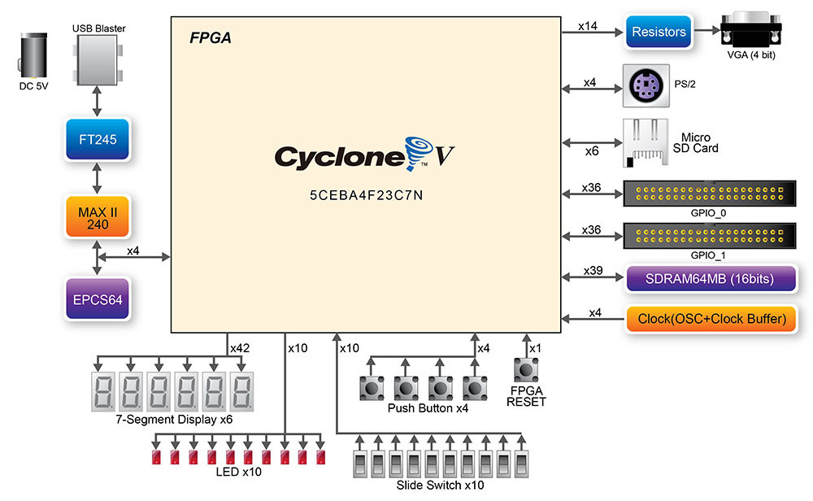
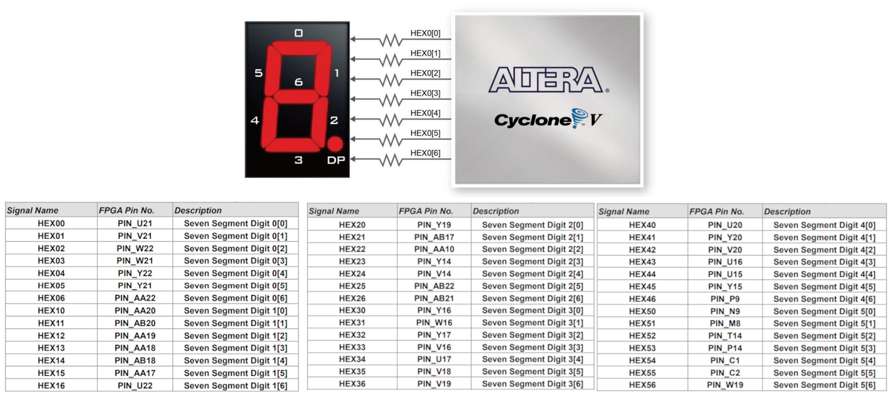
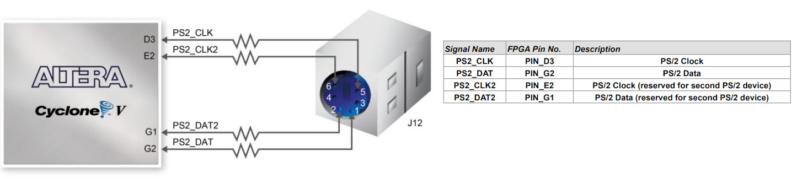
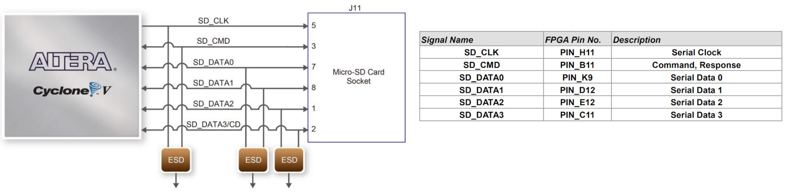
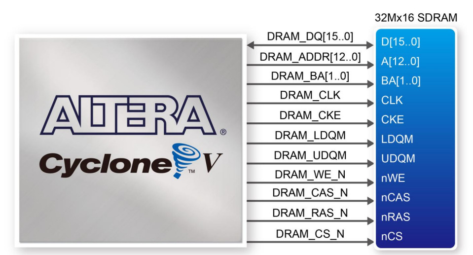
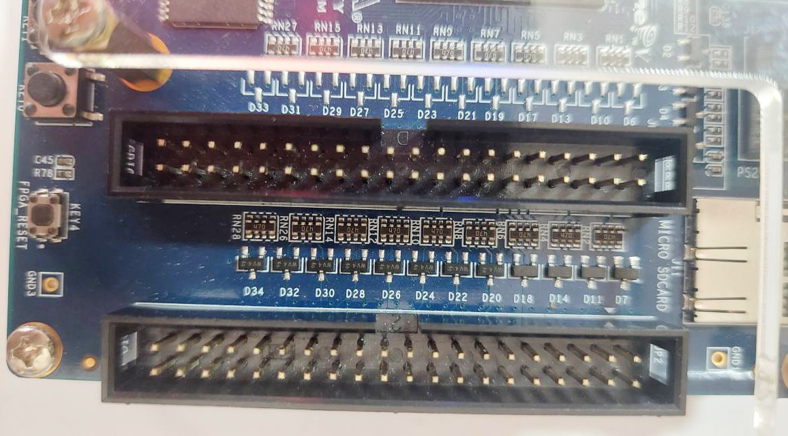
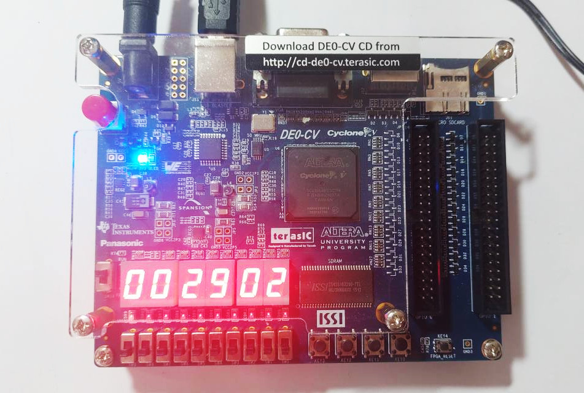

Tutorial: Guidelines for Using the DE0-CV FPGA Board#
Terasic DE0-CV Board#
As an alternative to the DE10-Lite FPGA board, the DE0-CV board can also be used for learning and project-based exploration. Below is a summary of the technical specifications for the DE0-CV board:
- Intel / Altera Cyclone V FPGA (
5CEBA4F23C7NDevice)- with ~49K Logic Elements (LEs)
- Onboard serial configuration memory IC (
EPCS64) - Onboard USB Blaster (FT245 + MAX-II CPLD) for JTAG programming
- Type B USB connector
- 50MHz clock oscillator
- 4x buffered 50MHz clocks
- Switches/Buttons/LEDs
- 10x LEDs (active-high)
- 10x Slide Switches
- 5x Push Buttons
- active-low, debounced with a Schmitt Trigger IC (
74AUC17) - 4x User-defined (
KEY[3:0]) - 1x CPU Reset (active-low)
- active-low, debounced with a Schmitt Trigger IC (
- 6x 7-Segments (
HEX0..HEX5)- Common anode (CA) type (active-low)
- Two 2x20 GPIO Header (+3.3V I/Os)
- Each pin on the expansion headers is connected to two diodes (Schottky diodes) and a series resistor for protection against high (+3.3V) or low voltage (GND) level.
- There are 5V and 3.3V pins which can provide a total of 5W power.
- 4-bit Resistor DAC + VGA connector (15-pin D-sub connector)
- 64MB SDRAM, 16 bits data bus
- Micro SD Card Socket (both SPI and 4-bit SD mode)
- PS/2 mouse/keyboard
- Supply voltage: 5V (via a DC Power Jack) with a power on/off toggle switch
- 1x slide switch for
RUNorPROG(selection between JTAG and AS modes)RUNposition: uploading a bitstream file to the on-chip SRAM-based configuration memory of the FPGAPROGposition: flash a configuration data file to the EPCS64 using the Active-Serial configuration mode.

Figure: DE0-CV FPGA Board (with AC-to-5VDC Adapter)

Figure: The front and back side of the DE0-CV board (Source: Terasic)

Figure: DE0-CV Block Diagram (Source: Terasic)

Figure: FPGA Configuration Modes — JTAG vs. AS (Source: Terasic)

Figure: Clock inputs on the DE0-CV board (Source: Terasic)

Figure: Push buttons (KEYS) on the DE0-CV board (Source: Terasic)

Figure: 10-bit Red LEDs on the DE0-CV board (Source: Terasic)

Figure: 10-bit Slide Switches (Source: Terasic)

Figure: 6-Digit 7-Segment Display (Source: Terasic)

Figure: GPIO Pins — 2x20 Pin Headers (Source: Terasic)

Figure: VGA Pins (Source: Terasic)

Figure: PS/2 Pins (Source: Terasic)

Figure: SDCard Pins (Source: Terasic)

Figure: SDRAM Pins (Source: Terasic)

Figure: GPIO Connectors
FPGA Board Comparison#
- The DE0-CV board uses a Cyclone V FPGA device (
5CEBA4F23C7N), whereas the DE10-Lite board uses a MAX 10 FPGA device (10M50DAF484C7G). The FPGA devices on these boards offer nearly the same logic capacity (approximately 50K logic elements). - The MAX 10 FPGA includes on-chip flash configuration memory for storing the FPGA bitstream, while the Cyclone V FPGA requires an external serial configuration device.
- The MAX 10 FPGA also includes an on-chip ADC IP core, whereas the Cyclone V FPGA does not.
- The DE10-Lite has an Arduino-compatible female-pin connector, while the DE0-CV does not.
- The DE10-Lite provides an accelerometer (
ADXL345), while the DE0-CV does not have an onboard accelerometer. - The GPIO pins of the DE0-CV include protection (clamping) diodes, whereas the MAX 10 device on the DE10-Lite does not.
VHDL Demo Code#
The following VHDL code is provided as an example for
implementation and testing on the DE0-CV board.
The design implements a counter that increments every 100 ms.
The current counter value is displayed on the 6-digit, 7-segment display
(HEX5..HEX0).
In addition, the 10-bit slide switches (SW[9..0]) are used as inputs, and their values are displayed on the 10 LEDs (LEDR[9..0]) when one of the four push buttons (KEY[3..0]) is pressed.
LIBRARY IEEE;
USE IEEE.STD_LOGIC_1164.ALL;
USE IEEE.NUMERIC_STD.ALL;
ENTITY de0cv_demo_1 IS
PORT (
CLK : IN STD_LOGIC; -- 50 MHz clock
RESET_N : IN STD_LOGIC; -- active-low asynchronous reset
HEX5 : OUT STD_LOGIC_VECTOR(6 DOWNTO 0);
HEX4 : OUT STD_LOGIC_VECTOR(6 DOWNTO 0);
HEX3 : OUT STD_LOGIC_VECTOR(6 DOWNTO 0);
HEX2 : OUT STD_LOGIC_VECTOR(6 DOWNTO 0);
HEX1 : OUT STD_LOGIC_VECTOR(6 DOWNTO 0);
HEX0 : OUT STD_LOGIC_VECTOR(6 DOWNTO 0);
KEY : IN STD_LOGIC_VECTOR(3 DOWNTO 0);
SW : IN STD_LOGIC_VECTOR(9 DOWNTO 0);
LEDR : OUT STD_LOGIC_VECTOR(9 DOWNTO 0)
);
END ENTITY;
ARCHITECTURE rtl OF de0cv_demo_1 IS
--------------------------------------------------------------------
-- Function: integer (0–9) to 7-segment decode
--------------------------------------------------------------------
FUNCTION DEC7SEG(d : INTEGER RANGE 0 TO 15) RETURN STD_LOGIC_VECTOR IS
BEGIN
CASE d IS
WHEN 0 => RETURN "1000000"; -- 0
WHEN 1 => RETURN "1111001"; -- 1
WHEN 2 => RETURN "0100100"; -- 2
WHEN 3 => RETURN "0110000"; -- 3
WHEN 4 => RETURN "0011001"; -- 4
WHEN 5 => RETURN "0010010"; -- 5
WHEN 6 => RETURN "0000010"; -- 6
WHEN 7 => RETURN "1111000"; -- 7
WHEN 8 => RETURN "0000000"; -- 8
WHEN 9 => RETURN "0010000"; -- 9
WHEN OTHERS => RETURN "1111111"; -- off
END CASE;
END FUNCTION;
--------------------------------------------------------------------
-- Clock parameters
--------------------------------------------------------------------
CONSTANT CLK_FREQ : INTEGER := 50_000_000;
CONSTANT TICK_MS : INTEGER := 100;
CONSTANT TICK_COUNT : INTEGER := (CLK_FREQ / 1000) * TICK_MS;
SIGNAL tick_counter : integer range 0 to TICK_COUNT := 0;
CONSTANT CNT_MAX : INTEGER := 999999;
SIGNAL counter : INTEGER RANGE 0 TO CNT_MAX := 0;
--------------------------------------------------------------------
-- BCD digit storage
--------------------------------------------------------------------
TYPE bcd_array_t IS ARRAY(5 DOWNTO 0) OF INTEGER RANGE 0 TO 9;
SIGNAL bcd_digits : bcd_array_t := (OTHERS => 0);
--------------------------------------------------------------------
-- FSM for sequential division/mod extraction
--------------------------------------------------------------------
TYPE state_t IS (IDLE, DIVIDE, DONE);
SIGNAL state : state_t := IDLE;
SIGNAL div_result : INTEGER RANGE 0 TO CNT_MAX := 0;
SIGNAL digit_index : INTEGER RANGE 0 TO 5 := 0;
SIGNAL tick_pulse : STD_LOGIC := '0';
SIGNAL bcd_update : STD_LOGIC := '0';
BEGIN
--------------------------------------------------------------------
-- Tick generator: produces pulse every 100 ms
--------------------------------------------------------------------
PROCESS (CLK, RESET_N)
BEGIN
IF RESET_N = '0' THEN
tick_counter <= 0;
ELSIF rising_edge(CLK) THEN
IF tick_counter = TICK_COUNT THEN
tick_counter <= 0;
ELSE
tick_counter <= tick_counter + 1;
END IF;
END IF;
END PROCESS;
tick_pulse <= '1' WHEN tick_counter = TICK_COUNT ELSE '0';
--------------------------------------------------------------------
-- Binary counter
--------------------------------------------------------------------
PROCESS (CLK, RESET_N)
BEGIN
IF RESET_N = '0' THEN
counter <= 0;
bcd_update <= '0';
ELSIF rising_edge(CLK) THEN
bcd_update <= '0';
IF tick_pulse = '1' THEN -- one-cycle tick pulse is high
IF counter = CNT_MAX THEN
counter <= 0;
ELSE
counter <= counter + 1;
END IF;
bcd_update <= '1'; -- one-cycle pulse
END IF;
END IF;
END PROCESS;
--------------------------------------------------------------------
-- Sequential mod/div BCD conversion
--------------------------------------------------------------------
PROCESS (CLK, RESET_N)
BEGIN
IF RESET_N = '0' THEN
bcd_digits <= (OTHERS => 0);
div_result <= 0;
digit_index <= 0;
state <= IDLE;
ELSIF rising_edge(CLK) THEN
CASE state IS
WHEN IDLE =>
IF bcd_update = '1' THEN
state <= DIVIDE;
div_result <= counter;
digit_index <= 0;
END IF;
WHEN DIVIDE =>
bcd_digits(digit_index) <= div_result MOD 10;
div_result <= div_result / 10;
IF digit_index = 5 THEN
state <= DONE;
ELSE
digit_index <= digit_index + 1;
END IF;
WHEN DONE =>
state <= IDLE;
END CASE;
END IF;
END PROCESS;
--------------------------------------------------------------------
-- Drive 7-segment outputs (active-low)
--------------------------------------------------------------------
HEX0 <= DEC7SEG(bcd_digits(0));
HEX1 <= DEC7SEG(bcd_digits(1));
HEX2 <= DEC7SEG(bcd_digits(2));
HEX3 <= DEC7SEG(bcd_digits(3));
HEX4 <= DEC7SEG(bcd_digits(4));
HEX5 <= DEC7SEG(bcd_digits(5));
LEDR <= SW WHEN not(KEY(0) and KEY(1) and KEY(2) and KEY(3)) = '1'
ELSE (others => '0');
END ARCHITECTURE rtl;

Figure: Device Selection (Cyclone V Base E - 5CEBA4F23C7)
A Tcl script is provided to configure the pin assignments for the design example on the DE0-CV board.
#set_global_assignment -name FAMILY "Cyclone V"
#set_global_assignment -name DEVICE 5CEBA4F23C7
# 50MHz system clock and async. active-low reset (push button)
set_instance_assignment -name IO_STANDARD "3.3-V LVTTL" -to CLK
set_instance_assignment -name IO_STANDARD "3.3-V LVTTL" -to RESET_N
set_location_assignment PIN_M9 -to CLK
set_location_assignment PIN_P22 -to RESET_N
######################################################################
# Push buttons
set_instance_assignment -name IO_STANDARD "3.3-V LVTTL" -to KEY[0]
set_instance_assignment -name IO_STANDARD "3.3-V LVTTL" -to KEY[1]
set_instance_assignment -name IO_STANDARD "3.3-V LVTTL" -to KEY[2]
set_instance_assignment -name IO_STANDARD "3.3-V LVTTL" -to KEY[3]
set_location_assignment PIN_U7 -to KEY[0]
set_location_assignment PIN_W9 -to KEY[1]
set_location_assignment PIN_M7 -to KEY[2]
set_location_assignment PIN_M6 -to KEY[3]
######################################################################
# Red LEDs
set_instance_assignment -name IO_STANDARD "3.3-V LVTTL" -to LEDR[0]
set_instance_assignment -name IO_STANDARD "3.3-V LVTTL" -to LEDR[1]
set_instance_assignment -name IO_STANDARD "3.3-V LVTTL" -to LEDR[2]
set_instance_assignment -name IO_STANDARD "3.3-V LVTTL" -to LEDR[3]
set_instance_assignment -name IO_STANDARD "3.3-V LVTTL" -to LEDR[4]
set_instance_assignment -name IO_STANDARD "3.3-V LVTTL" -to LEDR[5]
set_instance_assignment -name IO_STANDARD "3.3-V LVTTL" -to LEDR[6]
set_instance_assignment -name IO_STANDARD "3.3-V LVTTL" -to LEDR[7]
set_instance_assignment -name IO_STANDARD "3.3-V LVTTL" -to LEDR[8]
set_instance_assignment -name IO_STANDARD "3.3-V LVTTL" -to LEDR[9]
set_location_assignment PIN_AA2 -to LEDR[0]
set_location_assignment PIN_AA1 -to LEDR[1]
set_location_assignment PIN_W2 -to LEDR[2]
set_location_assignment PIN_Y3 -to LEDR[3]
set_location_assignment PIN_N2 -to LEDR[4]
set_location_assignment PIN_N1 -to LEDR[5]
set_location_assignment PIN_U2 -to LEDR[6]
set_location_assignment PIN_U1 -to LEDR[7]
set_location_assignment PIN_L2 -to LEDR[8]
set_location_assignment PIN_L1 -to LEDR[9]
######################################################################
set_instance_assignment -name IO_STANDARD "3.3-V LVTTL" -to SW[0]
set_instance_assignment -name IO_STANDARD "3.3-V LVTTL" -to SW[1]
set_instance_assignment -name IO_STANDARD "3.3-V LVTTL" -to SW[2]
set_instance_assignment -name IO_STANDARD "3.3-V LVTTL" -to SW[3]
set_instance_assignment -name IO_STANDARD "3.3-V LVTTL" -to SW[4]
set_instance_assignment -name IO_STANDARD "3.3-V LVTTL" -to SW[5]
set_instance_assignment -name IO_STANDARD "3.3-V LVTTL" -to SW[6]
set_instance_assignment -name IO_STANDARD "3.3-V LVTTL" -to SW[7]
set_instance_assignment -name IO_STANDARD "3.3-V LVTTL" -to SW[8]
set_instance_assignment -name IO_STANDARD "3.3-V LVTTL" -to SW[9]
set_location_assignment PIN_U13 -to SW[0]
set_location_assignment PIN_V13 -to SW[1]
set_location_assignment PIN_T13 -to SW[2]
set_location_assignment PIN_T12 -to SW[3]
set_location_assignment PIN_AA15 -to SW[4]
set_location_assignment PIN_AB15 -to SW[5]
set_location_assignment PIN_AA14 -to SW[6]
set_location_assignment PIN_AA13 -to SW[7]
set_location_assignment PIN_AB13 -to SW[8]
set_location_assignment PIN_AB12 -to SW[9]
#####################################################################
# Six-Digit 7-Segment Display
set_instance_assignment -name IO_STANDARD "3.3-V LVTTL" -to HEX0[0]
set_instance_assignment -name IO_STANDARD "3.3-V LVTTL" -to HEX0[1]
set_instance_assignment -name IO_STANDARD "3.3-V LVTTL" -to HEX0[2]
set_instance_assignment -name IO_STANDARD "3.3-V LVTTL" -to HEX0[3]
set_instance_assignment -name IO_STANDARD "3.3-V LVTTL" -to HEX0[4]
set_instance_assignment -name IO_STANDARD "3.3-V LVTTL" -to HEX0[5]
set_instance_assignment -name IO_STANDARD "3.3-V LVTTL" -to HEX0[6]
set_instance_assignment -name IO_STANDARD "3.3-V LVTTL" -to HEX1[0]
set_instance_assignment -name IO_STANDARD "3.3-V LVTTL" -to HEX1[1]
set_instance_assignment -name IO_STANDARD "3.3-V LVTTL" -to HEX1[2]
set_instance_assignment -name IO_STANDARD "3.3-V LVTTL" -to HEX1[3]
set_instance_assignment -name IO_STANDARD "3.3-V LVTTL" -to HEX1[4]
set_instance_assignment -name IO_STANDARD "3.3-V LVTTL" -to HEX1[5]
set_instance_assignment -name IO_STANDARD "3.3-V LVTTL" -to HEX1[6]
set_instance_assignment -name IO_STANDARD "3.3-V LVTTL" -to HEX2[0]
set_instance_assignment -name IO_STANDARD "3.3-V LVTTL" -to HEX2[1]
set_instance_assignment -name IO_STANDARD "3.3-V LVTTL" -to HEX2[2]
set_instance_assignment -name IO_STANDARD "3.3-V LVTTL" -to HEX2[3]
set_instance_assignment -name IO_STANDARD "3.3-V LVTTL" -to HEX2[4]
set_instance_assignment -name IO_STANDARD "3.3-V LVTTL" -to HEX2[5]
set_instance_assignment -name IO_STANDARD "3.3-V LVTTL" -to HEX2[6]
set_instance_assignment -name IO_STANDARD "3.3-V LVTTL" -to HEX3[0]
set_instance_assignment -name IO_STANDARD "3.3-V LVTTL" -to HEX3[1]
set_instance_assignment -name IO_STANDARD "3.3-V LVTTL" -to HEX3[2]
set_instance_assignment -name IO_STANDARD "3.3-V LVTTL" -to HEX3[3]
set_instance_assignment -name IO_STANDARD "3.3-V LVTTL" -to HEX3[4]
set_instance_assignment -name IO_STANDARD "3.3-V LVTTL" -to HEX3[5]
set_instance_assignment -name IO_STANDARD "3.3-V LVTTL" -to HEX3[6]
set_instance_assignment -name IO_STANDARD "3.3-V LVTTL" -to HEX4[0]
set_instance_assignment -name IO_STANDARD "3.3-V LVTTL" -to HEX4[1]
set_instance_assignment -name IO_STANDARD "3.3-V LVTTL" -to HEX4[2]
set_instance_assignment -name IO_STANDARD "3.3-V LVTTL" -to HEX4[3]
set_instance_assignment -name IO_STANDARD "3.3-V LVTTL" -to HEX4[4]
set_instance_assignment -name IO_STANDARD "3.3-V LVTTL" -to HEX4[5]
set_instance_assignment -name IO_STANDARD "3.3-V LVTTL" -to HEX4[6]
set_instance_assignment -name IO_STANDARD "3.3-V LVTTL" -to HEX5[0]
set_instance_assignment -name IO_STANDARD "3.3-V LVTTL" -to HEX5[1]
set_instance_assignment -name IO_STANDARD "3.3-V LVTTL" -to HEX5[2]
set_instance_assignment -name IO_STANDARD "3.3-V LVTTL" -to HEX5[3]
set_instance_assignment -name IO_STANDARD "3.3-V LVTTL" -to HEX5[4]
set_instance_assignment -name IO_STANDARD "3.3-V LVTTL" -to HEX5[5]
set_instance_assignment -name IO_STANDARD "3.3-V LVTTL" -to HEX5[6]
set_location_assignment PIN_U21 -to HEX0[0]
set_location_assignment PIN_V21 -to HEX0[1]
set_location_assignment PIN_W22 -to HEX0[2]
set_location_assignment PIN_W21 -to HEX0[3]
set_location_assignment PIN_Y22 -to HEX0[4]
set_location_assignment PIN_Y21 -to HEX0[5]
set_location_assignment PIN_AA22 -to HEX0[6]
set_location_assignment PIN_AA20 -to HEX1[0]
set_location_assignment PIN_AB20 -to HEX1[1]
set_location_assignment PIN_AA19 -to HEX1[2]
set_location_assignment PIN_AA18 -to HEX1[3]
set_location_assignment PIN_AB18 -to HEX1[4]
set_location_assignment PIN_AA17 -to HEX1[5]
set_location_assignment PIN_U22 -to HEX1[6]
set_location_assignment PIN_Y19 -to HEX2[0]
set_location_assignment PIN_AB17 -to HEX2[1]
set_location_assignment PIN_AA10 -to HEX2[2]
set_location_assignment PIN_Y14 -to HEX2[3]
set_location_assignment PIN_V14 -to HEX2[4]
set_location_assignment PIN_AB22 -to HEX2[5]
set_location_assignment PIN_AB21 -to HEX2[6]
set_location_assignment PIN_Y16 -to HEX3[0]
set_location_assignment PIN_W16 -to HEX3[1]
set_location_assignment PIN_Y17 -to HEX3[2]
set_location_assignment PIN_V16 -to HEX3[3]
set_location_assignment PIN_U17 -to HEX3[4]
set_location_assignment PIN_V18 -to HEX3[5]
set_location_assignment PIN_V19 -to HEX3[6]
set_location_assignment PIN_U20 -to HEX4[0]
set_location_assignment PIN_Y20 -to HEX4[1]
set_location_assignment PIN_V20 -to HEX4[2]
set_location_assignment PIN_U16 -to HEX4[3]
set_location_assignment PIN_U15 -to HEX4[4]
set_location_assignment PIN_Y15 -to HEX4[5]
set_location_assignment PIN_P9 -to HEX4[6]
set_location_assignment PIN_N9 -to HEX5[0]
set_location_assignment PIN_M8 -to HEX5[1]
set_location_assignment PIN_T14 -to HEX5[2]
set_location_assignment PIN_P14 -to HEX5[3]
set_location_assignment PIN_C1 -to HEX5[4]
set_location_assignment PIN_C2 -to HEX5[5]
set_location_assignment PIN_W19 -to HEX5[6]
set_location_assignment PIN_W19 -to HEX5[6]

Figure: 6-digit BCD Counter Demo Using the DE0-CV Board
This work is licensed under a Creative Commons Attribution-ShareAlike 4.0 International License.
Created: 2025-09-29 | Last Updated: 2025-09-29